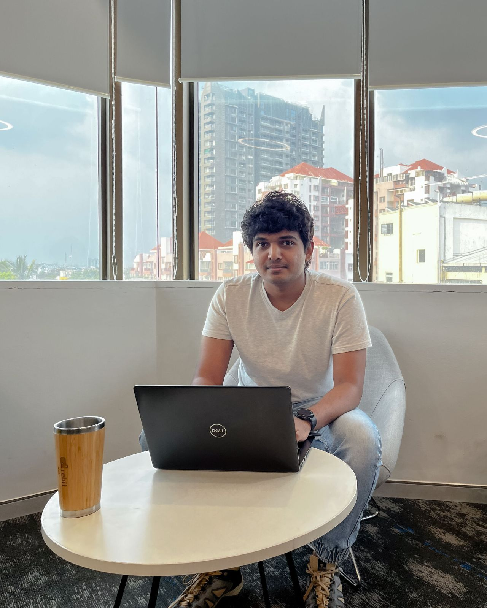

I'm a versatile engineer, not a one-stack specialist. Five years of production work across backend, infrastructure and full-stack, then a master's in AI, and the pattern has always been the same: hand me an unfamiliar domain, and I'll learn it well enough to build the real thing.
Enterprise backup, healthcare telephony, atmospheric science, neuroimaging, reinforcement learning, retrieval systems. What I keep coming back to is AI applied to somewhere it hasn't been yet, and that's the part I find genuinely fun.

Benchmarked mBERT, XLM-R and GPT across cross-lingual transfer, sentiment analysis and generation using BLEU, ROUGE, F1 and perplexity over diverse language families. Vol. 4, No. 11, pp. 97–105.
| 2026 | 1st place · Game Day Analytics Challenge · 120+ students, 59 brands |
| 2026 | Honorable mention · Generative AI Hackathon · "Most deployable, tech-driven solution", 35+ teams |
| 2025 | 1st place · Salesforce IDEAthon · recruiting CRM for Utah Athletics |
| 21–24 | Team Excellence, Above & Beyond, Bug Bounty · BETSOL |